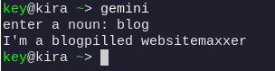

Alright, so I've noticed a somewhat false trend among my friends: we like to say something like "Xpilled Ymaxxer," and it doesn't really mean anything except the fact that we're partaking in said subject. What's happening is that X is any noun, and Y is a more general form of that noun (producedpilled foodmaxxer, etc).
So what I'm going to do is use the Gemini API to ask for a more general form of a noun inputted, and then give you an answer in the form of "Xpilled f(X)maxxer".
I've never actually interacted with the Gemini API before, so the first order of business is to create a key and figure out how to request the LLM to give you an output.
I decided to do it in python, and I don't think I'll make this an integrated web app just yet because github pages isn't built for that kind of thing. You might see it later though when I get this onto a real server
Ok, that didn't take very long, most of the time was spent getting a key. I've just turned it into a bash alias that will give you a prompt for now.
Here's the final product!
 ok bye enjoy the short blog